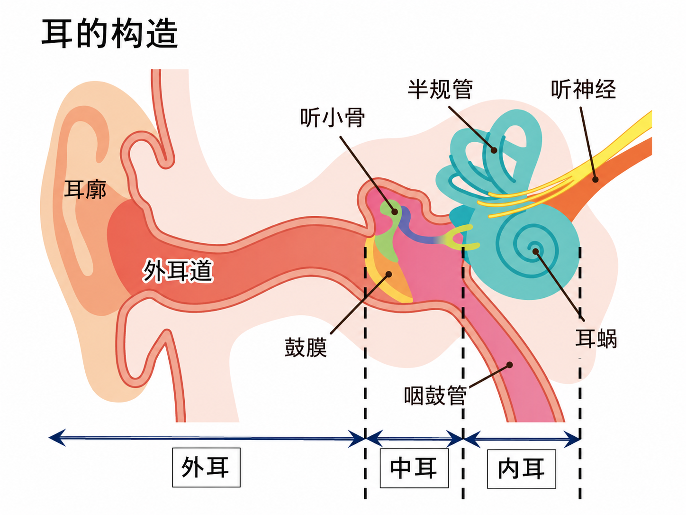
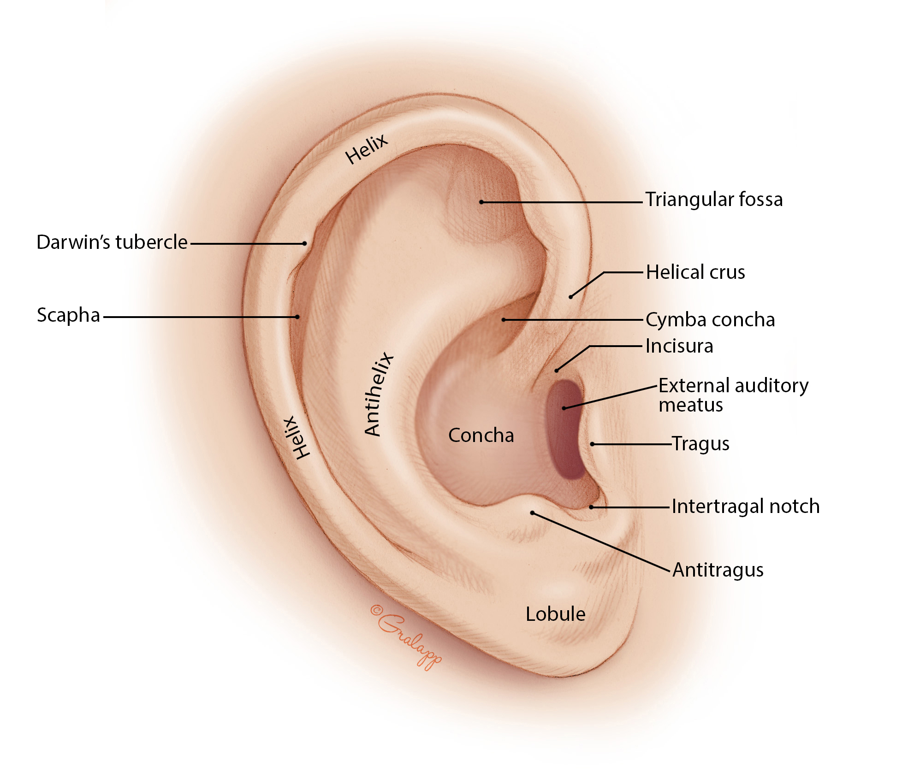
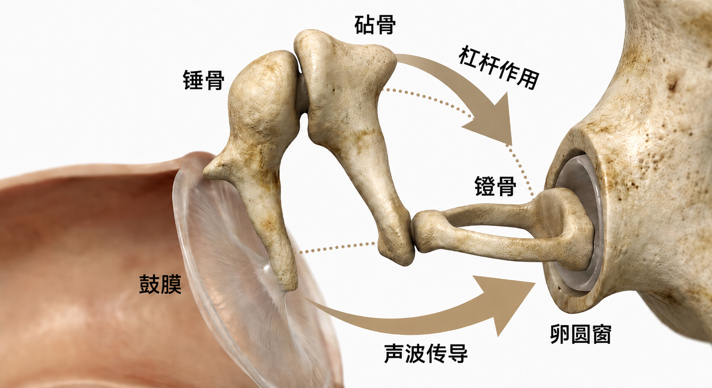
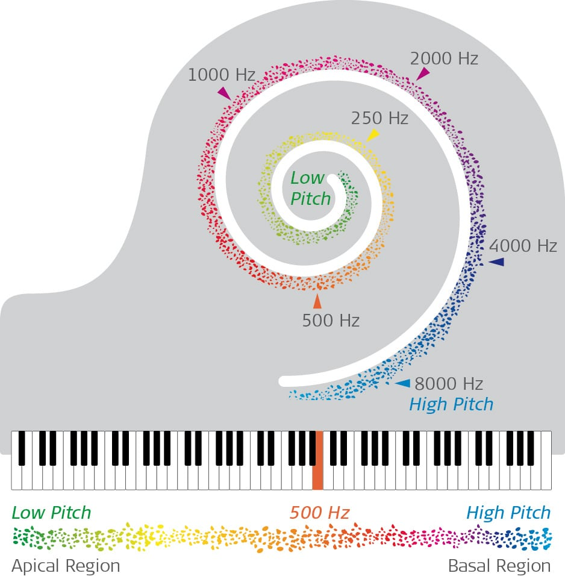
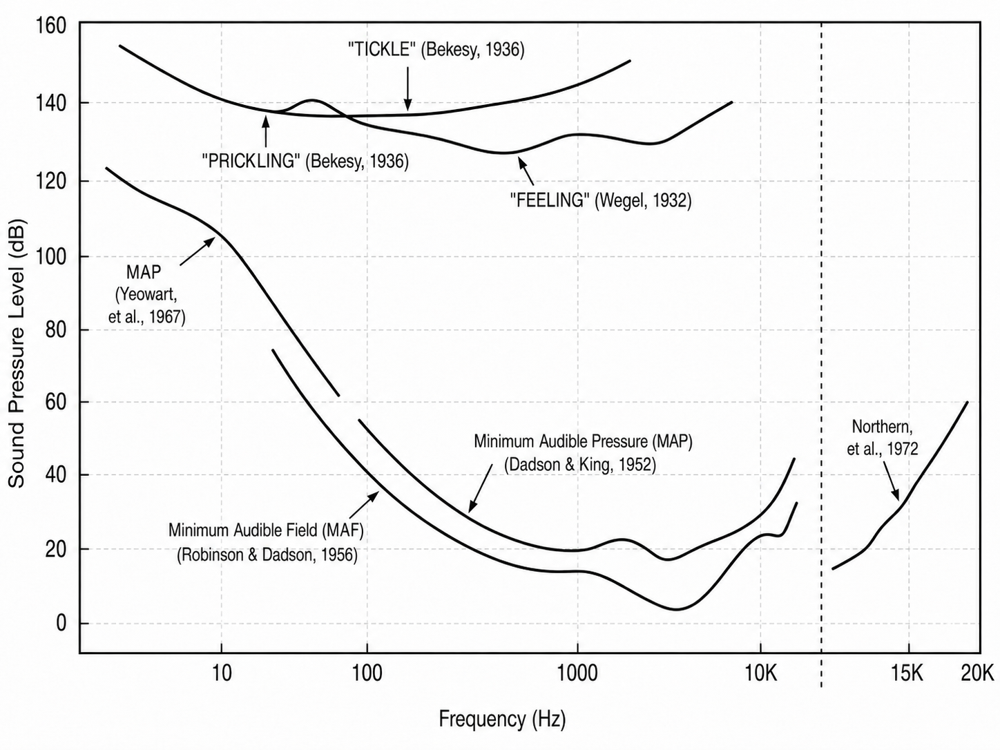
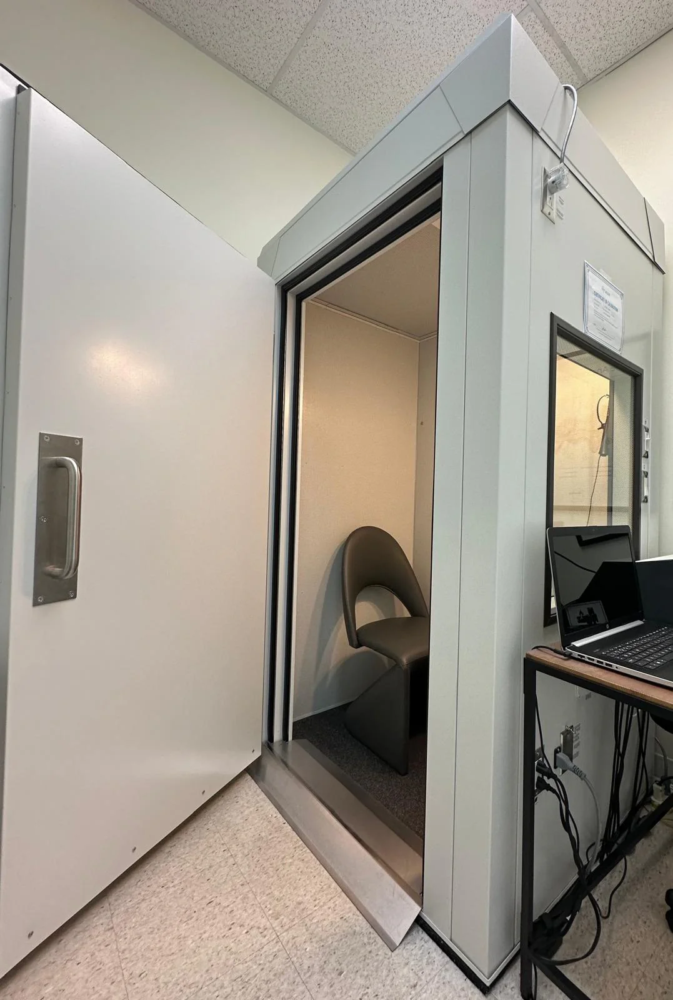
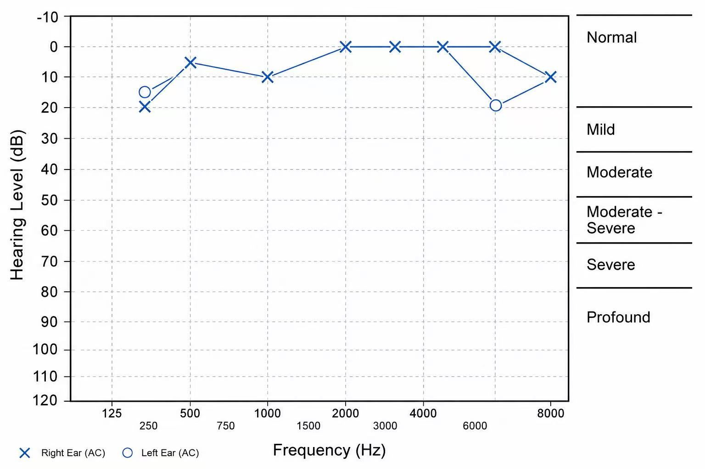
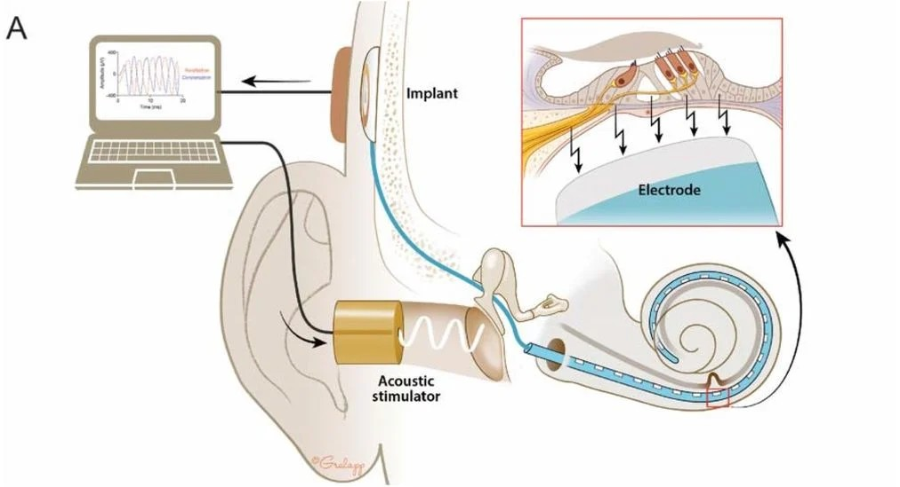

不是被动麦克风
本章的第一条主线是：耳朵不是把空气压力原样交给大脑。耳廓和耳道改变方向相关频谱， 中耳把鼓膜振动传给卵圆窗，内耳再把机械振动转成神经活动。
- 外耳：收集声波并引入方向相关滤波。
- 中耳：鼓膜和听小骨完成机械耦合与阻抗匹配。
- 内耳：耳蜗基底膜把频率组织成空间位置。
DRAFT CHAPTER / HUMAN HEARING
声音进入耳朵后并不是被动记录。外耳、中耳和内耳会改变声波，耳蜗把频率映射到位置，听阈、响度、 临界频带和掩蔽决定哪些声音容易被听见、区分或忽略。
AUDITORY CHAIN
本章的第一条主线是：耳朵不是把空气压力原样交给大脑。耳廓和耳道改变方向相关频谱， 中耳把鼓膜振动传给卵圆窗，内耳再把机械振动转成神经活动。




COCHLEAR MAP
耳蜗互动图让学生拖动频率并观察基底膜相对位置，帮助建立从声学频率到神经位置编码的直觉。 但用课程统一的青色主轨迹和珊瑚色探针重新绘制。
约 37%沿基底膜的相对位置
1000 mel近似心理声学频率尺度
中频语音敏感区当前位置的教学解释
这张图是简化教学模型：它帮助建立“频率不是只存在于频谱图上，也对应耳蜗位置”的直觉。
THRESHOLD AND HEALTH
同样的声压级在不同频率上不一定同样容易被听见。本章把最小可听、听力测试、audiogram、 助听器和人工耳蜗放在一起，用来说明心理声学不是抽象曲线，也会成为健康和设备问题。




LOUDNESS
拖动响度级和测试频率，观察达到近似等响需要的声压级如何变化。中高频通常更敏感，低频需要更高声压。
60 dB SPL该频率达到近似等响所需声压
中频最敏感当前频率区域解释
phon以 1 kHz 参照的响度级
CRITICAL BANDS
中心频率滑块说明：感知上的频率分辨率不是固定 Hz 宽度。中心频率越高，等效矩形带宽通常越宽。
132 Hz近似 ERB 带宽
934 - 1066 Hz示意频带范围
感知分辨率相近频率更容易互相影响
MASKING TO MP3
当目标声在频率上靠近较强的掩蔽声，并且声级低于简化掩蔽阈值时，它可能存在于信号中但不容易被听见。 MP3 的课堂应用点正是把“听不出来”转化成工程能力。
可能被掩蔽根据简化阈值模型估计
相距 200 Hz频率距离
MP3心理声学模型的工程应用
学习路线
课堂路线由 Session 组织；音高、音色和 MIDI 已拆到独立 Chapter，避免心理声学页过长并保留后续复用空间。